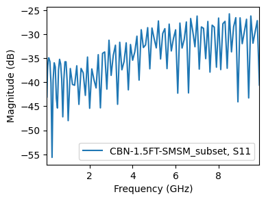
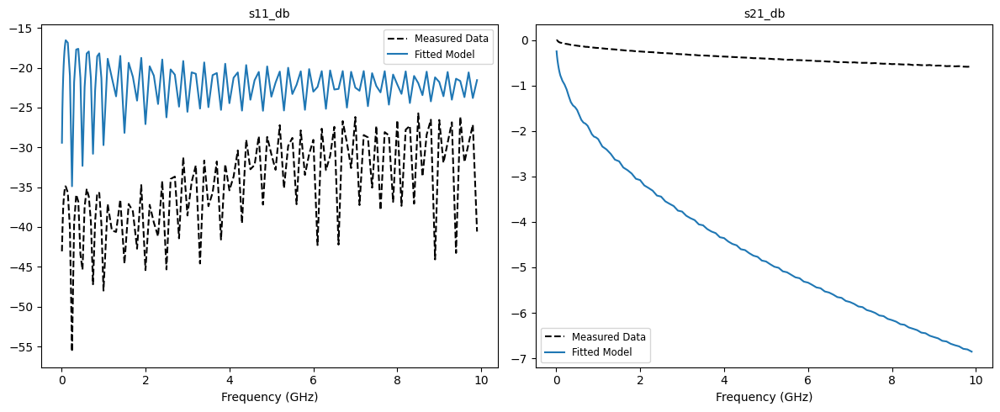
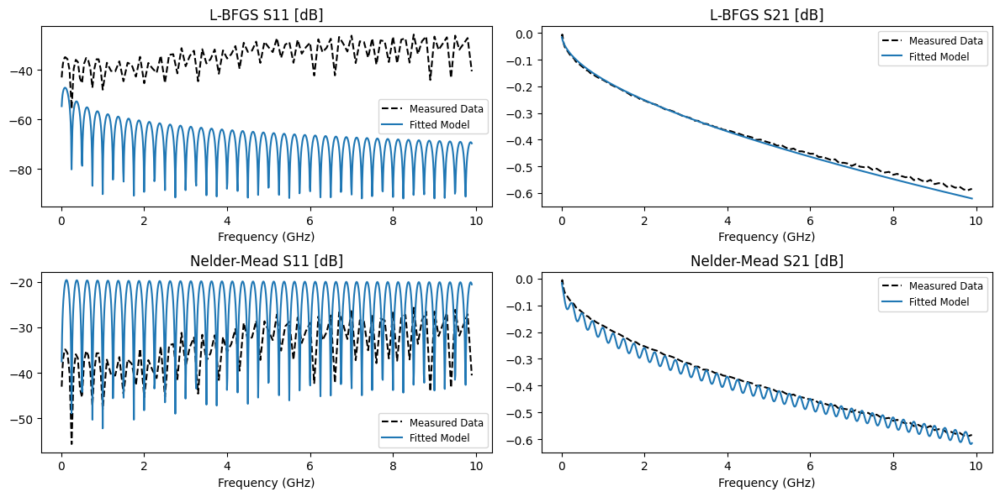
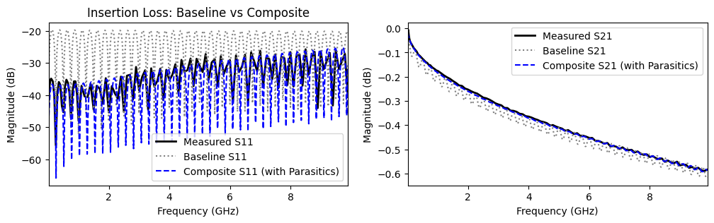

Fitting a Cable from 1 to 10 GHz (Part 1)
This tutorial demonstrates an end-to-end workflow for fitting a physically-motivated model to a high-frequency (1 to 10 GHz) measurement of a 1.5 ft CBN-1.5FT-SMSM cable from Mini-Circuits. The cable’s datasheet is available at https://www.minicircuits.com/pdfs/CBN-xx-SMSM+.pdf.
We will start by fitting an ideal transmission line model, and then add losses and parasitics to cater for effects such as attenuation and connector mismatch. The tutorial can be followed either directly in the documentation, or as port of a Jupyter notebook under docs/tutorials.
Note that this is part 1 of a two-part tutorial. Part 2 (Bayesian inference) will be added soon.
1. Setting up the environment
We only need a few packages for this tutorial. Make sure the following all import correctly:
[16]:
import matplotlib.pyplot as plt # for plotting
import skrf as rf # for touchstone reading
import pmrf as prf # ParamRF
2. Preparing the data
We begin by loading the measurement data. For this tutorial, we will download a sample .s2p file directly from the ParamRF repository and load it into a scikit-rf Network. The original file as available at https://www.minicircuits.com/WebStore/dashboard.html?model=CBN-1.5FT-SMSM%2B
[17]:
import os
import urllib.request
import skrf as rf
import matplotlib.pyplot as plt
base_url = "https://raw.githubusercontent.com/gvcallen/paramrf/main/docs/tutorials/data/"
file_name = "CBN-1.5FT-SMSM.s2p"
full_url = base_url + file_name
local_dir = "data"
local_filename = os.path.join(local_dir, file_name)
os.makedirs(local_dir, exist_ok=True)
if not os.path.exists(local_filename):
print(f"Downloading {file_name} to {local_dir}/...")
urllib.request.urlretrieve(full_url, local_filename)
# Load the measured data into skrf using the new local path
measured = rf.Network(local_filename, f_unit='GHz')
measured = measured[measured.frequency.f_scaled < 10]
fig, ax = plt.subplots(figsize=(4, 3))
measured.plot_s_db(m=0, n=0, ax=ax)

3. Selecting a model
ParamRF provides a few transmission line models, such as PhysicalLine, CoaxialLine and DatasheetLine. Looking at the datasheet, we see no mention of physical parameters like loss tangent, conductor loss or detailed geometry dimensions. However, there is a velocity factor, as well as loss factors k1 and k2. This is just what DatasheetLine was meant for.
Let’s try fitting the model with its expected length and default parameters as a quick check. Note that if we construct a default model or pass in float values, all parameters in the model are seen as fixed (non-tunable). For demonstration purposes, if we want to optimize the default model but don’t have an initial guess, we can set all the parameters to be free (tunable) using pmrf.as_free.
[ ]:
default_model = prf.models.DatasheetLine(length=prf.math.feet_2_meter(1.5))
# Free all parameters
for name in default_model.named_params().keys():
default_model = default_model.at(name).apply(prf.as_free)
# We could also have used a map
# default_model = default_model.map(prf.as_free, predicate=prf.is_param)
default_results = prf.fitting.fit(default_model, measured)
fig, (ax1, ax2) = plt.subplots(1, 2, figsize=(12, 5))
default_results.plot_s_db(m=0, n=0, ax=ax1)
_ = default_results.plot_s_db(m=1, n=0, ax=ax2)
/home/gvcallen/Masters/Python/paramrf/pmrf/optimize/base.py:204: UserWarning: Optimization failed to converge. Trying increasing the maximum number of iterations or loosening the solver tolerances.
warnings.warn("Optimization failed to converge. Trying increasing the maximum number of iterations or loosening the solver tolerances.")

…it failed to converge, though the results are still not horrible. However, we can definitely do better by providing the optimizer with a better starting point!
4. Specifying parameters
In ParamRF, parameter bounds and scales can be specified using methods such as pmrf.Bounded or pmrf.Fixed (available in pmrf.parameters). In this example, we use pmrf.Bounded.
Looking at the datasheet, we find the cable is 50 ohm with a velocity factor vf of 0.74, skin effect loss k1 of around 1.137 dbB/100m, and dielectric loss k2 of around 0.00253 dB/100m. We use this information directly to specify initial parameters for DatasheetLine. We fix the velocity factory (dielectric constant), since there is a known correlation between it and the cable’s length (explored further in part 2 of this tutorial!).
We fit the model using both the gradient-based L-BFGS-B as well as the robust Nelder-Mead (which can work better when you are unsure of your initial parameters).
[19]:
from pmrf.optimize import ScipyMinimize
# Specify model parameters. We give the model a name to easily reference its parameters
baseline_model = prf.models.DatasheetLine(
length=prf.Bounded(prf.math.feet_2_meter(1.4), prf.math.feet_2_meter(1.6)),
zn=prf.Bounded(45.0, 55.0),
vf=prf.Fixed(0.74),
k1=prf.Bounded(1.0, 1.3),
k2=prf.Bounded(2.0, 3.0, scale=1e-3),
name='line'
)
# Fit the model
baseline_lbfgs_results = prf.fitting.fit(baseline_model, measured, solver=ScipyMinimize(method='L-BFGS-B'))
baseline_nelder_results = prf.fitting.fit(baseline_model, measured, solver=ScipyMinimize(method='Nelder-Mead'))
# Plot the results. We pass a separate frequency to plot the model at a higher resolution
freq_plot = prf.Frequency(
measured.frequency.f_scaled[0],
measured.frequency.f_scaled[-1],
1001,
'GHz',
)
fig, axes = plt.subplots(2, 2, figsize=(12, 6))
baseline_lbfgs_results.plot_s_db(m=0, n=0, ax=axes[0,0], model_frequency=freq_plot)
baseline_lbfgs_results.plot_s_db(m=1, n=0, ax=axes[0,1], model_frequency=freq_plot)
baseline_nelder_results.plot_s_db(m=0, n=0, ax=axes[1,0], model_frequency=freq_plot)
_ = baseline_nelder_results.plot_s_db(m=1, n=0, ax=axes[1,1], model_frequency=freq_plot)
axes[0,0].set_title('L-BFGS S11 [dB]')
axes[0,1].set_title('L-BFGS S21 [dB]')
axes[1,0].set_title('Nelder-Mead S11 [dB]')
_ = axes[1,1].set_title('Nelder-Mead S21 [dB]')
/home/gvcallen/Masters/Python/.venv/lib/python3.12/site-packages/jaxopt/_src/scipy_wrappers.py:343: RuntimeWarning: Method Nelder-Mead does not use gradient information (jac).
res = osp.optimize.minimize(scipy_fun, jnp_to_onp(init_params, self.dtype),

While Nelder-Mead appears to fit the S11 better, L-BFGS-B achieves a better S21 fit. This can easily be affected by the type of loss function, parameter starting point, the specific model, as well as many other factors, so it is important to experiment. However, do note that L-BFGS-B is generally much faster since it obtained gradients directly from JAX, which may be more important for large models.
5. Adding parasitics
Now that we know that we are in the right ballpark with our initial parameters and Nelder-Mead is working for us, it is clear that S11 drifts over frequency. This can be explained by parasitic capacitance in the cable connectors. We should model this!
To polish this tutorial off, we therefore add two shunt capacitors to both sides of the cable model using the ** operator.
We print out the composite model before continuing to view its parameters.
[20]:
# Define a parasitic connector capacitor
# We initialize it at 0.1 pF and constrain it to physical (positive) values
# We give the parameters themselves names to reference them directly
shunt_cap1 = prf.models.ShuntCapacitor(
C=prf.Bounded(0.0, 1.0, value=0.1, scale=1e-12, name='C1'),
)
shunt_cap2 = prf.models.ShuntCapacitor(
C=prf.Bounded(0.0, 1.0, value=0.1, scale=1e-12, name='C2'),
)
# Create the composite model by cascading Cap -> Coax -> Cap
composite_model = shunt_cap1 ** baseline_model ** shunt_cap2
print("Composite Model:")
composite_model.named_params()
Composite Model:
[20]:
{'C1': 1.0000000000000002e-13,
'line.length': 0.45720000000000005,
'line.zn': 50.0,
'line.vf': 0.7399999999999999,
'line.k1': 1.15,
'line.k2': 0.0025000000000000014,
'C2': 1.0000000000000002e-13}
Since we know that the capacitors should have similar values, we should tie them together using prf.models.Model.tied to eliminate a degree of freedom:
[21]:
final_model = composite_model.tied(
'C2',
'C1',
)
6. Final optimization
Finally, we optimize the composite model and print out its best parameters. The model captures the high-frequency drift extremely well, while maintaining reasonable parameter values.
[22]:
# Fit the composite model
results_composite = prf.fitting.fit(final_model, measured, solver=ScipyMinimize(method='Nelder-Mead'))
composite_fitted = results_composite.model
# Plot the final comparison
fig, (ax1, ax2) = plt.subplots(1, 2, figsize=(12, 3))
measured.plot_s_db(m=0, n=0, ax=ax1, label='Measured S11', color='k', linewidth=2)
baseline_nelder_results.model.plot_s_db(freq_plot, m=0, n=0, ax=ax1, label='Baseline S11', color='gray', linestyle=':')
composite_fitted.plot_s_db(freq_plot, m=0, n=0, ax=ax1, label='Composite S11 (with Parasitics)', color='b', linestyle='--')
measured.plot_s_db(m=1, n=0, ax=ax2, label='Measured S21', color='k', linewidth=2)
baseline_nelder_results.model.plot_s_db(freq_plot, m=1, n=0, ax=ax2, label='Baseline S21', color='gray', linestyle=':')
composite_fitted.plot_s_db(freq_plot, m=1, n=0, ax=ax2, label='Composite S21 (with Parasitics)', color='b', linestyle='--')
ax1.set_title('Return Loss: Baseline vs Composite')
ax1.set_title('Insertion Loss: Baseline vs Composite')
ax1.legend()
plt.show()
# Inspect the final resolved parameters
print("Final Model:")
composite_fitted.named_params()

Final Model:
[22]:
{'C1': 1.8444119268717662e-14,
'line.length': 0.44353803945821296,
'line.zn': 50.707883195249934,
'line.vf': 0.7399999999999999,
'line.k1': 1.3,
'line.k2': 0.0002131683427168843}